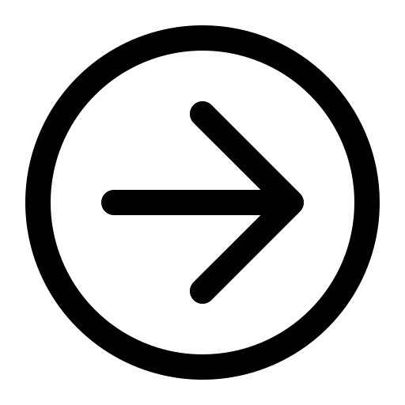

Sami Gattoufi :

description Naissance: 26 juin 1976; Spain Nationalité: Spanish Mouvement artistique: Neo-Figurative Art
en decouvrir plus Carmen Delaco est une artiste basée en Espagne dont les peintures ont été exposées à l'échelle nationale, ainsi qu'aux États-Unis, en Corée du Sud, en Chine, au Royaume-Uni, au Mexique et en Australie. Ses compositions figuratives sont imprégnées de la suggestion de l'expressionnisme et explorent des sujets liés à la violence et à la répression, inspirés de l'actualité. A l'inverse, Delaco dépeint également «la crudité et la délicatesse que recèle cette vie», ainsi que des thèmes mythologiques mêlant nature, humanité et divinité.